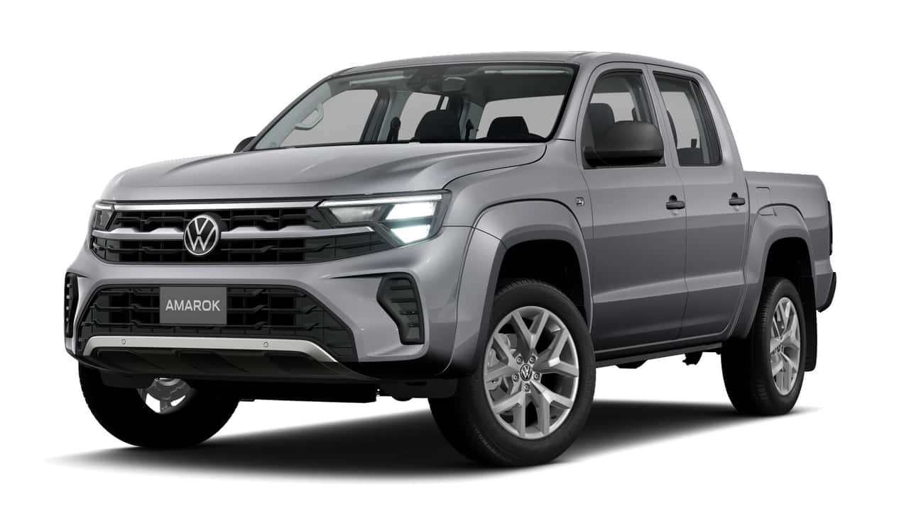

Volkswagen Amarok

A versão vendida no Brasil atualmente é equipada com motor V6 3.0 Turbo Diesel,
com tração 4×4 e câmbio automático de 8 marchas.
Linha 2025: Comfortline V6 R$ 309.990; Highline ~ R$ 328.990; Extreme ~ R$ 350.990.
A Amarok é uma picape média de segmento elevado, projetada para carga, uso misto estrada/terra.
Voltar